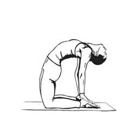

आसन > उष्ट्रासन :

-
उष्ट्रासन, जिसे "कैमल पोज़" भी कहा जाता है, छाती को खोलने, रीढ़ की हड्डी को मजबूत करने, और शरीर
की लचीलापन बढ़ाने के लिए एक महत्वपूर्ण आसन है।
उष्ट्रासन करने की विधि :
- आरंभिक स्थिति: दोनों घुटनों के बल खड़े हो जाएं और पैरों को कूल्हों की चौड़ाई पर रखें।
- हाथों की स्थिति: धीरे-धीरे पीछे की ओर झुकें और अपने हाथों को एड़ियों पर रखें।
- छाती को खोलना: छाती को ऊपर की ओर उठाएं और सिर को पीछे की ओर झुकाएं।
- सांस लेना: इस स्थिति में रहते हुए गहरी सांस लें और ध्यान केंद्रित करें।
- सामान्य स्थिति में लौटना: धीरे-धीरे हाथों को छोड़ें और सामान्य स्थिति में लौटें।
लाभ :
- उष्ट्रासन छाती को खोलता है, रीढ़ की हड्डी को मजबूत करता है, और शरीर की लचीलापन को बढ़ाता है।
- यह थकान को कम करने और मन को शांत करने में भी सहायक है।
Move to top